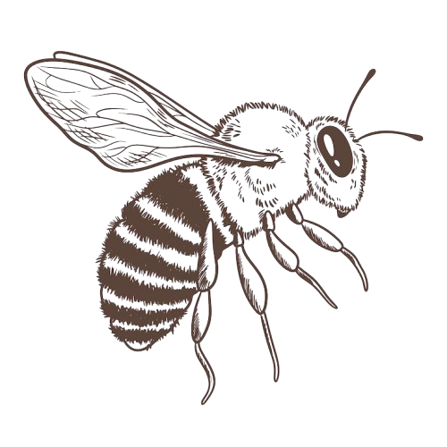
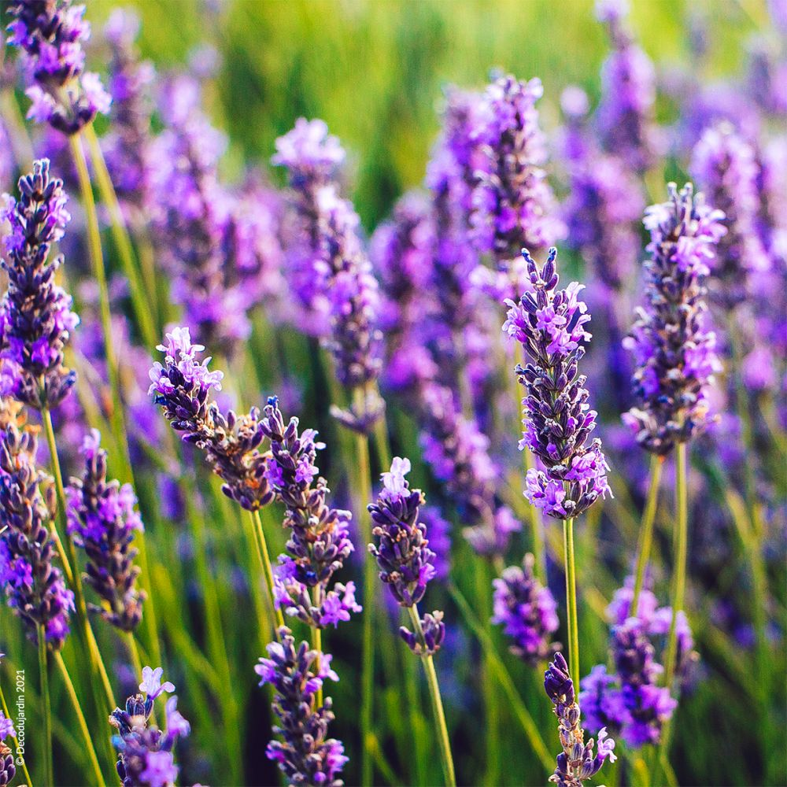
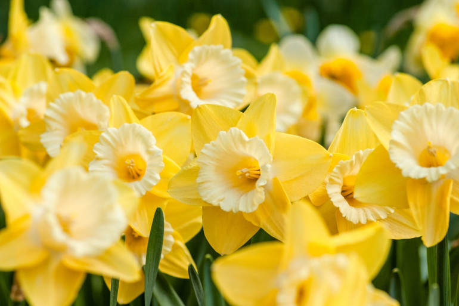
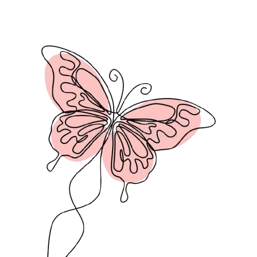
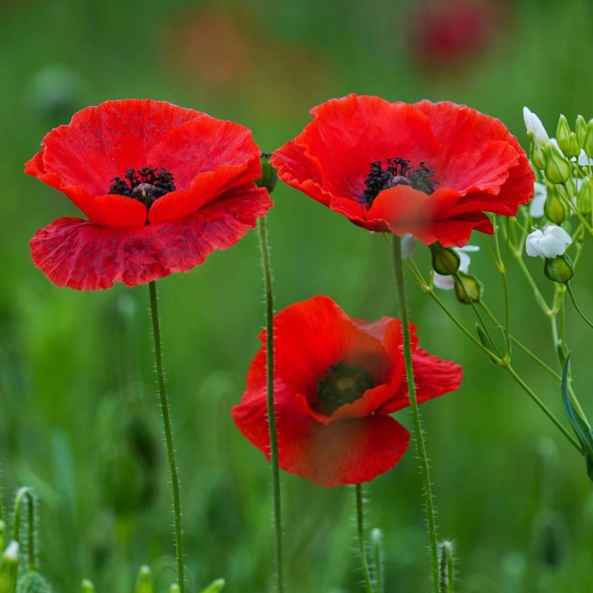

La lavande
Habitat :
L'espèce apprécie surtout les emplacements ensoleillés, les sols calcaires drainés, pauvres et secs ou un peu frais.
Elles s'accommodent de divers type de sols, sauf de ceux qui seraient exagérément humides.
Toutes les parties de la plante témoignent d'une excellente adaptation à un milieu sec et aride.
Les racines notamment, sont nombreuses et s'enfoncent profondément dans le sol,
à la recherche d'un maximum de fraîcheur durant l'été. Elle apprécie également les sols à pH neutres ou alcalin.
Utilisation : La lavande peut être utilisée comme calmant, antidépressif et sédatif.
Elle est aussi utilisée comme antalgique, anti-inflammatoire, antiseptique et cicatrisant.
Elle est également antibactérienne.

la jonquille
Habitat : Les jonquilles poussent dans tous les sols.
Cependant, elles ne supportent ni la sécheresse ni les terres gorgées d'eau.
Elles prospèrent le mieux dans un lieu ensoleillé, mais se satisfont également d'un endroit semi-ombragé
Utilisation : Il est possible d'extraire directement la concrète ou l'absolue dans le but de l'intégrer à des parfums

 Le muguet
Le muguet
Habitat : Le muguet pousse à l'ombre ou à demi-ombre dans les bois secs en tapis souvent assez denses.
C'est une plante forestière qui pousse au coeur des chênaies, des hêtraies ou des pinèdes.
On trouve le muguet aussi dans les fougeraies.
Utilisation : Hydratation longue durée : Il aide à maintenir une hydratation optimale, idéale pour les peaux sèches ou déshydratées,
offrant douceur et confort à la peau.
Prévention des irritations cutanées : Le muguet bleu contribue à renforcer la barrière cutanée, réduisant ainsi la sensibilité aux irritations et aux rougeurs.

Le coquelicot
Habitation : Cultures, jachères, champs de céréales : c'est une fleur messicole = des moissons.
Egalement sur les terrains fraîchement retournés comme les terrains vagues ou les terrassements routiers.
Utilisation : Les pétales de ce végétal sauvages sont utilisés en phytothérapie
pour traiter un vaste éventail de maux, notamment les troubles du sommeil et anxieux et la dépression